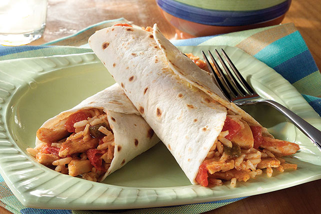

Naco Mama's Tacos

Description
There is nothing exeptional about these tacos.
Your Mama Probably makes great tacos, these are not those.
However they are very cheap and easy to prepare.
and will serve multiple people
Ingredients
- Chicken breast
- Spanish Rice
- Lettuce (Shredded)
- Sour Cream
- Tortillas
- Salsa
Steps
- Cube and season chicken
- Cook chicken on low heat in skillet
- Smear sour cream on soft tortilla and prepare to add other ingredients
- Add salsa and lettuce to taste
- Add chicken and rice
- Top with salsa
- Wrap up and enjoy!